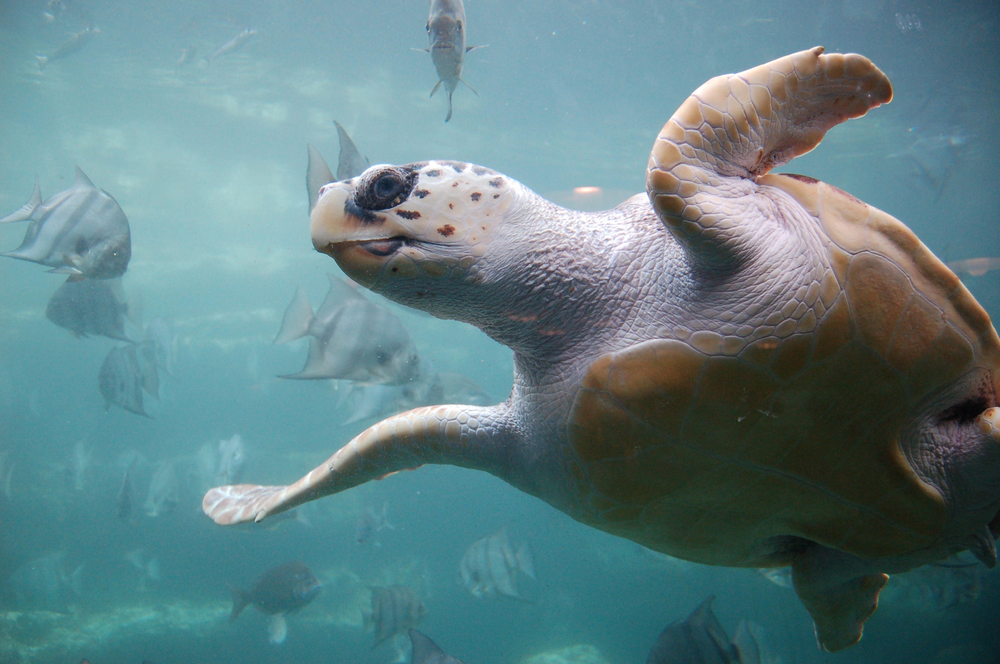

Foto: ukanda (Flickr), CC BY 2.0
La tortuga caguama anida principalmente en las playas de Baja California Sur, estado que además funciona como zona de alimentación para gran parte de la población juvenil del Pacífico norte. También anida, en menor medida, en el Golfo de México y la península de Yucatán. Está clasificada como especie amenazada, y México protege sus playas de anidación mediante campamentos tortugueros.